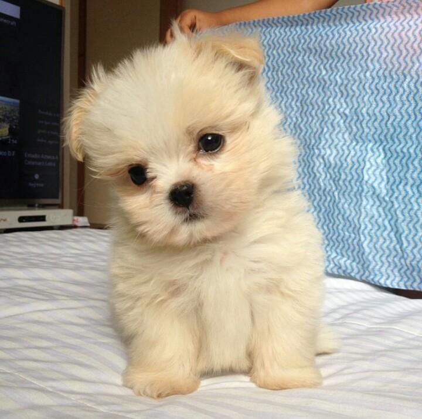
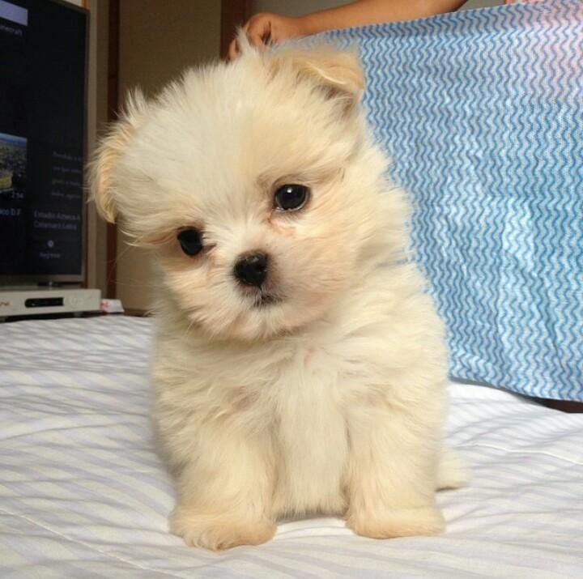
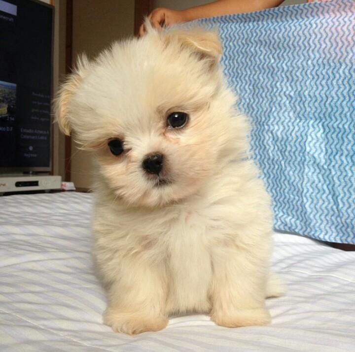

ETIQUETAS
se encuentran denro de <>
Se pone toda la informacion qeu podemos englobar dentro de la etiqueta
EJEMPLO
"a" se usa para los links
"p" Parrafo
"section" Secciones
"div" secciones
ATRIBUTOS
Atributos de a pueden ser:
* "href" atributo de referencia, para enviar al sitio que queramos, link de destino
"class" - referencia al css
Documentacion de HTML
Nathaly J Nar
ETIQUETA UNICA: No necesita etiqueta de cierre, son pocas, las identificamos por que no tienen texto
es un atributo que esta ahí y lo que va a hacer es una referencia.
ejemplo
* etiqueta "IMG" imagen,
- Atributo de img es "src" source, trae algo, es de peicion, trabaja de 2 formas
"img src= "pego el link"" ó "omg src="la carpeta""
- ALT Las imagenes pueden tener atributos "alt" da contexto de que es lo que contiene esa imagen
link de imagen desde servidor
link de imagen desde carpeta 
* Etiqueta INPUT sirve para tener interaccion con el usuario
-Atributo TYPE con este puedo ingresar text=texto, date=fecha...
-NAME similar al id, para poder identificar la informacion
-
Cuadro de texto
Cuadro de fecha
 link de imagen desde carpeta 
* Etiqueta INPUT sirve para tener interaccion con el usuario
-Atributo TYPE con este puedo ingresar text=texto, date=fecha...
-NAME similar al id, para poder identificar la informacion
-
Cuadro de texto
Cuadro de fecha
link de imagen desde carpeta 
* Etiqueta INPUT sirve para tener interaccion con el usuario
-Atributo TYPE con este puedo ingresar text=texto, date=fecha...
-NAME similar al id, para poder identificar la informacion
-
Cuadro de texto
Cuadro de fecha